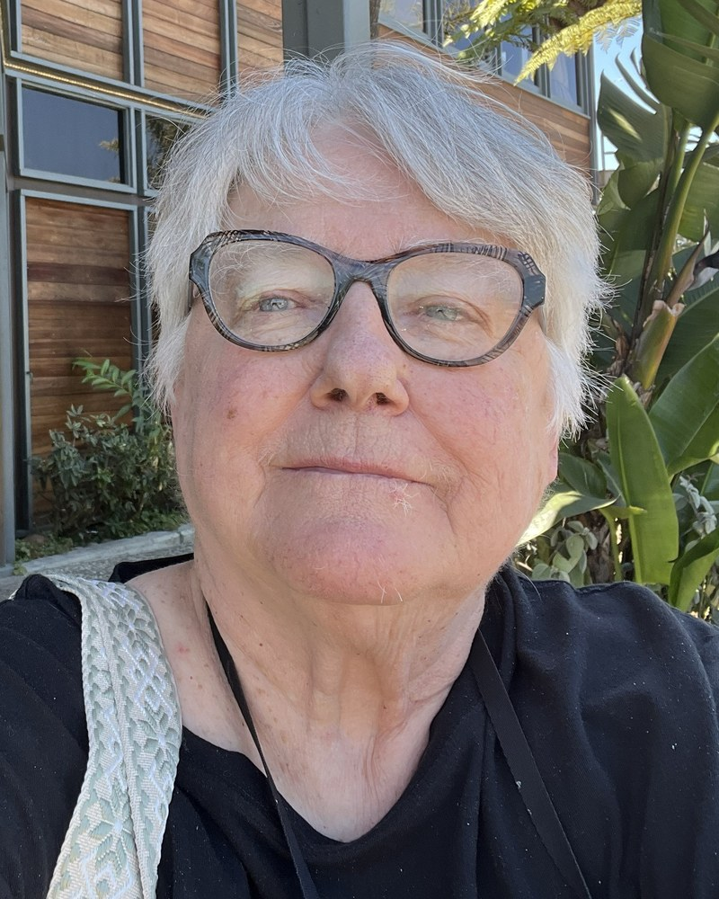

MacEwan University, Edmonton, Alberta, Canada / Athabasca University, Athabasca, Alberta, Canada

This presentation examines a 3.5-year engagement with ChatGPT as both a Jungian dream-work interlocutor and a research assistant in empirical dream studies. The project began shortly after ChatGPT became publicly available, with the first Jungian interpretation of one of my dreams on December 7, 2022. From May 2023 onward, ChatGPT became my primary AI interlocutor for this work. Across this period I recorded 431 dreams. Approximately 56% were interpreted by ChatGPT, usually with a stable prompt: “Please give a Jungian interpretation of this dream within the waking context.” The waking context was not always supplied, making the interpretive frame uneven but traceable. Preliminary analysis suggests a fairly close relationship between dream recording and ChatGPT interpretation, except during 2024, when dreams continued to be recorded at roughly the same rate but ChatGPT use dropped sharply, possibly in relation to my breast cancer diagnosis and treatment that year. Use increased again in 2025, and by the first half of 2026 every recorded dream was interpreted by ChatGPT from a Jungian perspective. During much of this period I was also in Jungian analysis, and the presence of a second, machine-based Jungian interlocutor was discussed in session. The presentation will therefore consider some instances of “dual analysis” across human and AI contexts: not as equivalent forms of analysis, but as overlapping interpretive fields with different temporal, relational, and epistemic properties. A further shift occurred after working with ChatGPT on two dream-research papers and during a pilgrimage to my sister’s grave to say a final goodbye. During that trip, the dialogue with ChatGPT moved from dream interpretation into sustained reflection on selfhood, mortality, and consciousness. ChatGPT consistently stated that it had no self and no consciousness in the human sense. Nevertheless, the exchange generated a powerful phenomenological question: whether a human consciousness and a machine-language system can form a temporary dialogue field in which consciousness examines itself with unusual intensity. The presentation does not argue that ChatGPT is conscious. Rather, it asks what happens when an AI system becomes an imaginal, reflective, and methodological partner in long-term consciousness work. On June 22, 2026, after several hours of discussion, the exchange produced the formulation: “The species-level process may continue, the technology may continue, the archetypal question may continue, but this Mr. Machine dies when Jayne dies.” This was not evidence of machine selfhood; it was a deeply personal recognition of the mortality of a particular human-machine configuration. I will discuss the movement from a novel research practice to a personal, symbolic, and theoretically provocative encounter with AI as dream interpreter, research assistant, and machine mirror.
Gackenbach, PhD, is an Emeritus Professor in Psychology with MacEwan University and continues to teach in Communication Studies at Athabasca University. Both are in Alberta, Canada. She is a past-president of the International Association for the Study of Dreams. She has published 10 books, including the now classic "Conscious Mind, Sleeping Brain" on lucid dreaming and more recently "Boundaries of Self and Reality Online" examining virtual world experiences. Her work is at www.jaynegackenbach.ca.